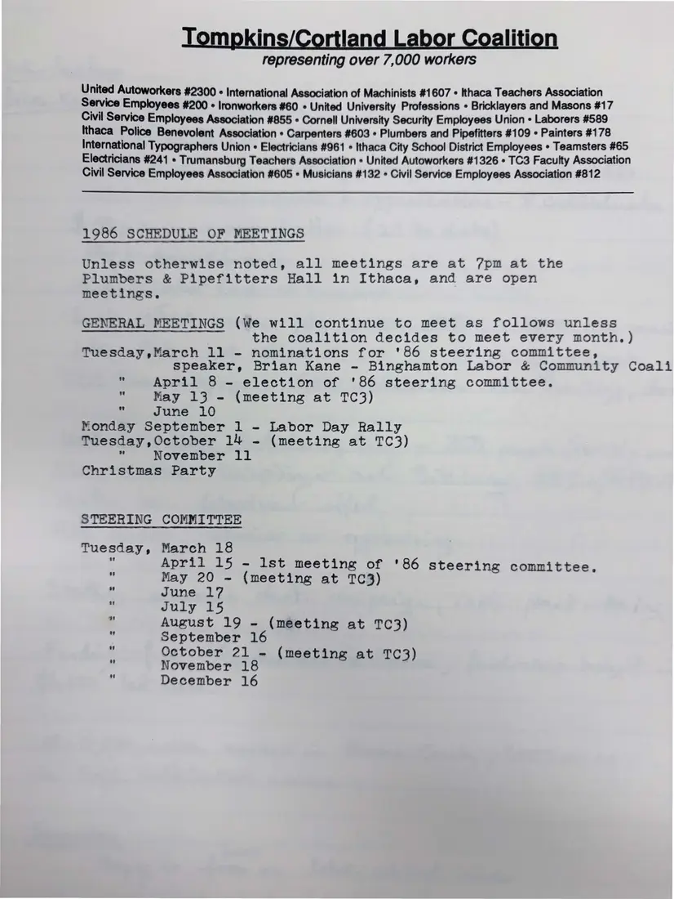

Meeting notice, 1 page
1986 schedule of meetings
1986
Dates for general meetings and steering committee meetings in 1986, including a March 11 talk by Brian Kane of the Binghamton Labor and Community Council.
Download or cite this itemPages


(open zoom view)Read the page text (machine-read, mostly readable)
This text was generated automatically from the photograph and has not been corrected. The image is the authoritative record.
i land Labor lition representing over 7,000 workers United Autoworkers #2300 « International Association of Machinists #1607 « Ithaca Teachers Association Service Employees #200 « Ironworkers #60 + United University Professions + Bricklayers and Masons #17 Civil Service Employees Association #855 » Cornell University Security Employees Union « Laborers #589 Ithaca Police Benevolent Association » Carpenters #603 « Plumbers and Pipefitters #109 » Painters #178 International Typographers Union « Electricians #961 « Ithaca City School District Employees » Teamsters #65 Electricians #241 » Trumansburg Teachers Association » United Autoworkers #1326 » TC3 Faculty Association Civil Service Employees Association #605 » Musicians #132 « Civil Service Employees Association #812 1986 SCHEDULE OF MEETINGS Unless otherwise noted, all meetings are at 7pm at the Plumbers & Pipefitters Hall in Ithaca, and are open meetings. GENERAL MEETINGS (We will continue to meet as follows unless the coalition decides to meet every month.) Tuesday,March 11 - nominations for '86 steering committee, speaker, Brian Kane - Binghamton Labor & Community Coali : April 8 - election of '86 steering committee. May 13 - (meeting at TC3) = June 10 Monday September 1 - Labor Day Rally Tuesday,October 14 ~ (meeting at TC3) "s November 11 Christmas Party STEERING COMMITTEE Tuesday, March 18 o April 15 - lst meeting of '86 steering committee. @ May 20 ~ (meeting at 1TC3) 4 June 17 e July 15 August 19 - (meeting at TC3) 7 September 16 October 21 - (meeting at TC3) November 18 December 16
See something wrong, or recognize a person or event? Send a correction. If you hold rights in this item or think it should not be public, write to the same address.